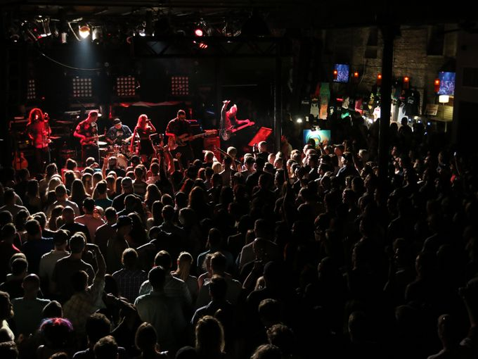

Florida's Best Kept Secret
Arts & Activities
From independent galleries to cultural events and museums, there are plenty of opportunities to abosrb the history and culture of Pensacola.

Music & Nightlife
Pensacola's music and nightclub scene is vibrant, with different clubs and venues to appeal to every taste and style. From underground metal shows to booming nightclubs, there is always something to see.